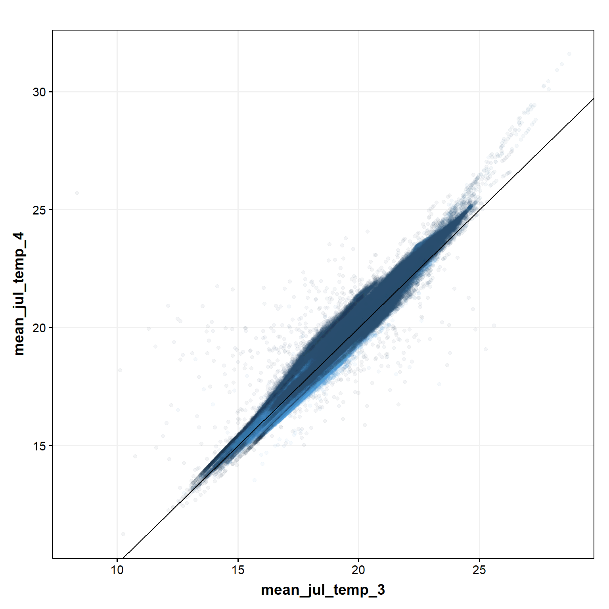
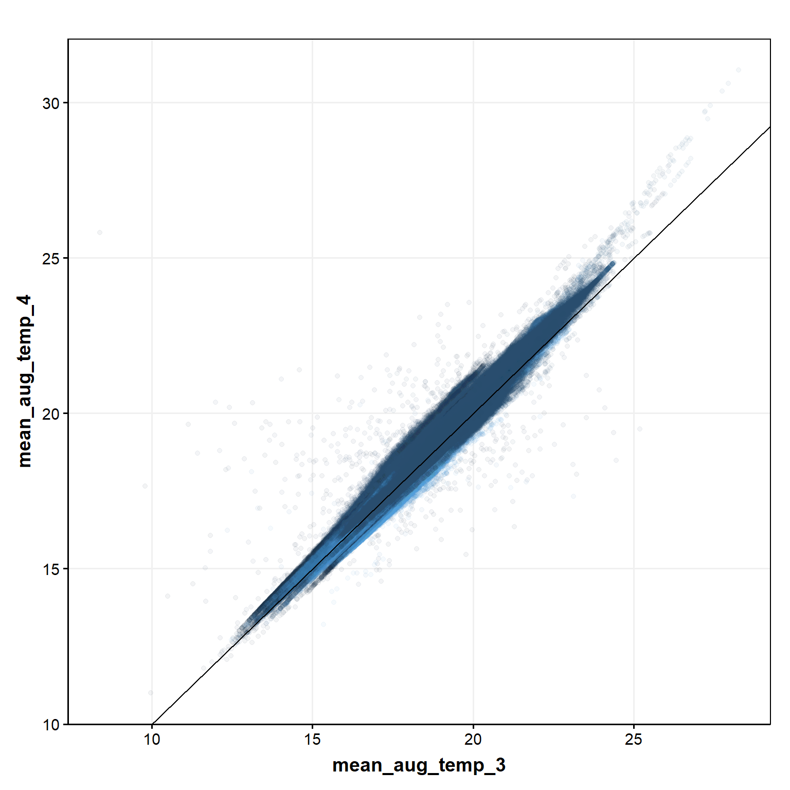

Code
library(getPrepareWBData) # for theme_publication()
library(tidyverse)
load(file = './data/dWide.RData')library(getPrepareWBData) # for theme_publication()
library(tidyverse)
load(file = './data/dWide.RData')Plot functions
plotAll <- function(d,x,y,huc) {
ggplot(d, aes(get(x), get(y), color = factor(get(huc)))) +
geom_point(alpha = 0.1, show.legend = FALSE) +
geom_abline(intercept = 0, slope = 1) +
labs(x = x, y = y) +
theme_publication()
}
plotByHUC <- function(d,x,y,huc) {
ggplot(d, aes(get(x), get(y))) +
geom_point(alpha = 0.1) +
geom_abline(intercept = 0, slope = 1) +
labs(x = x, y = y) +
theme_publication() +
facet_wrap(~get(huc))
}Plot version 3 (x-axis) against version 4 (y-axis) for several summer temperature variables.
plotAll(dWide, "mean_jul_temp_3", "mean_jul_temp_4","huc6")
plotByHUC(dWide, "mean_jul_temp_3", "mean_jul_temp_4", "huc6")plotAll(dWide, "mean_aug_temp_3", "mean_aug_temp_4","huc6")
plotByHUC(dWide, "mean_aug_temp_3", "mean_aug_temp_4", "huc6")plotAll(dWide, "mean_summer_temp_3", "mean_summer_temp_4","huc6")
plotByHUC(dWide, "mean_summer_temp_3", "mean_summer_temp_4", "huc6")plotAll(dWide, "mean_summer_temp_3", "mean_summer_temp_4","huc8")
plotByHUC(dWide, "mean_summer_temp_3", "mean_summer_temp_4", "huc8")
plotAll(dWide, "mean_summer_temp_3", "mean_summer_temp_4","huc10")plotByHUC(dWide, "mean_summer_temp_3", "mean_summer_temp_4", "huc10")
plotAll(dWide, "mean_max_temp_3", "mean_max_temp_4","huc6")plotByHUC(dWide, "mean_max_temp_3", "mean_max_temp_4", "huc6")